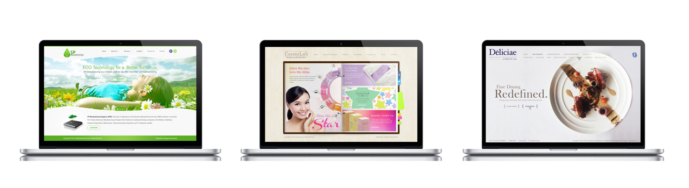

1 / 6
Web Design Sample 1
2 / 6

Web Design Sample 2
3 / 6
Web Design Sample 3
4 / 6

Web Design Sample 4
5 / 6
Web Design Sample 5
6 / 6
Web Design Sample 6
|
A passionate Graphic Artist who loves to share my talent to people who needed my work. The video above is a summary of what I love to do and how I live my life. I used to be an Architecture student that influenced my creativity in graphic designs. Architecture starts when you carefully put two bricks together. Design is the learned game correct and magnificent of forms assembled in the light. I respect the taste of each individuals/organization when it comes to design, what's important is how you execute the requirements needed by the client. Since people have different approach, always embracing new learnings and experiences to improve what I love most. Hoping we could build a good working relation. God Speed!